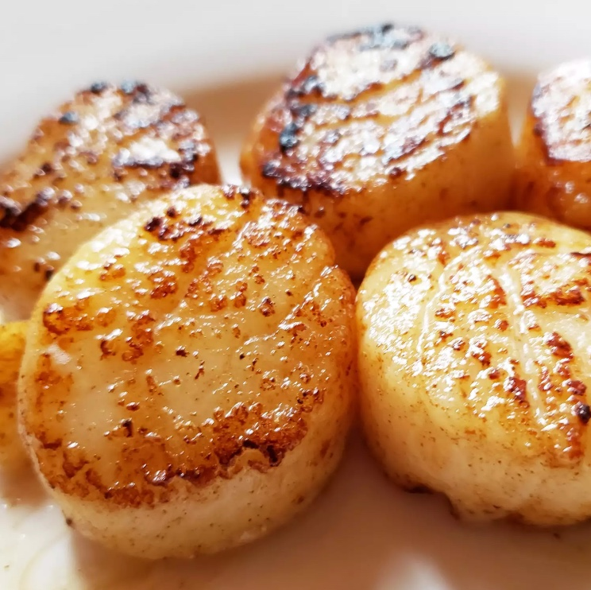

Easy Garlic-Lemon Scallops

Description
In this simple scallop recipe, large sea scallops are sautéed in butter and garlic and served with a lemon-butter sauce. They will melt in your mouth!
Ingredients
- Butter: Start by melting a stick and a half of butter in a skillet.
- Garlic: Fresh minced garlic cooked in butter creates a bold flavor base.
- Scallops: Of course, you’ll need scallops! Two pounds of fresh scallops should make about six servings.
- Lemon juice: Fresh lemon juice adds welcome brightness.
- Seasonings: Salt and pepper enhance the overall flavor of the scallops.
Steps
- Melt butter in a large skillet over medium heat. Stir in garlic and cook for a few seconds until fragrant.
- Arrange scallops in a single layer in the skillet; cook until golden brown on one side, about 2 minutes. Turn scallops over using tongs and continue cooking until firm and opaque, about 2 minutes more. Transfer scallops to a platter, reserving butter in the skillet.
- Whisk lemon juice, salt, and pepper into butter; pour sauce over scallops to serve.
Back to Main Page